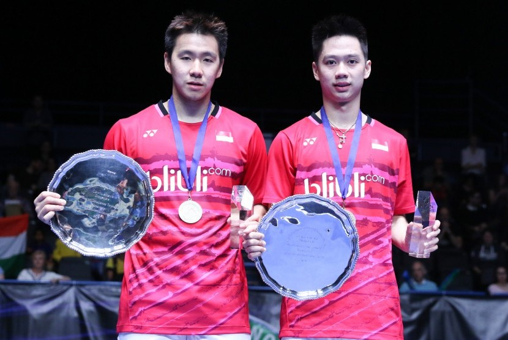

Get to know more about Badminton here!
"Konon kabarnya bulu tangkis sudah ada di negara tersebut lebih kurang 2000 tahun yang lampau. Pendapat kedua mengatakan jika olahraga ini berasal dari negeri Tiongkok. Nama olahraga ini bernama Jianzi di negara asalnya. Tetapi di masa lalu, Jianzi hanya memakai kok tanpa raket. Sedangkan peraturannya sendiri sama seperti aturan bulu tangkis pada umumnya. Seperti menjaga kok untuk tidak jatuh di tempat yang tidak seharusnya. Sebenarnya di zaman pertengahan di Inggris pun mempunyai permainan tradisional yang sering dimainkan anak-anak di sana. Nama permainan itu adalah “Battledore and Shuttlecock”. Cara untuk memainkannya dengan memakai tongkat dan kok. Pemain harus menjaga kok tetap di udara tanpa menyentuh tanah atau lantai. Cara memainkannya dengan dipukul selama mungkin. Namun bulu tangkis mulai benar-benar dimainkan oleh masyarakat dunia sejak abad ke-17. Badminton (bahasa Inggris dari bulu tangkis) itu berasal dari nama Istana di Inggris, yakni Badminton House. Jadi pada awalnya, keluarga Duke of Beafourt, pemilik dari Badminton House mengadakan sebuah perlombaan bulu tangkis di istana. Bermula dari permainan Battledore and Shuttlecock yang sering dimainkan di Inggris. Tetapi keluarga ini melakukan improvisasi dalam permainan ini, yakni menggunakan tali di tengah area permainan. Nah, penambahan tali itulah yang menjadi cikal bakal bulu tangkis yang kita kenal. Kemudian di akhir 1850-an, permainan Battledore and Shuttlecock terbaru buatan Duke of Beafourt ini justru berkembang pesat. Di tahun 1960 lewat pamflet buatan Isaac Spraat, nama permainan ini menjadi “Badminton Battledore a New Game” . Dari sinilah nama permainan ini menjadi badminton.